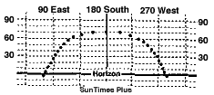

Date: 21 Apr 1996
Place: Seguin, Texas
Lat: 29 deg. 37' North
Lon: 97 deg. 56' West Z=6
Rise: 05:59
Azm: 075 deg. 36'
Set: 19:03
Azm: 284 deg. 35'
Twilight: 04:34/20:26
Hrs. Sun: 13:04
Mas Alt: 72.8 deg. @ 12:31 |
Time Alt Azm
06:30 6.0 79.4
07:00 12.3 83.0
07:30 18.8 86.5
08:00 25.3 90.1
08:30 31.8 94.0
09:00 38.3 98.2
09:30 44.7 102.9
10:00 51.0 108.6
10:30 57.1 115.7
11:00 62.7 125.1
11:30 67.6 138.1
12:00 21.2 156.4
12:30 72.5 179.6
13:00 71.2 203.1
13:30 67.7 221.6
14:00 62.8 234.8
14:30 57.2 244.2
15:00 51.2 251.4
15:30 44.9 257.1
16:00 38.5 261.8
16:30 32.0 266.1
17:00 25.5 269.9
17:30 19.1 273.5
18:00 12.6 277.1
18:30 6.2 280.6
|